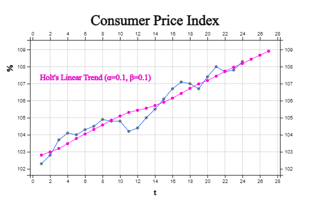

Chapter 13. Time Series Analysis
13.5 Exponential Smoothing Model and Forecasting
13.5.1 Stationary Time Series
A. Single Moving Average Model
The simple average model uses all observations until the current time. However, the unknown parameter \(\mu\) may shift slightly over time, so it would be reasonable to give more weight to recent data than to past data for prediction. If a weight \(\frac{1}{N}\) is given to only the most recent \(N\) observations at the present time \(T\) and the weight of the remaining observations is set to 0, the estimated value of \(\mu\) is as follows. $$ {\hat \mu} \;=\; \frac{1}{N} \sum_{ i=T-N+1}^T Y_i \;=\; \frac{1}{N} ( Y_{T-N+1} + Y_{T-N+2} + \cdots + Y_T ) $$ This is called a single moving average at the time point \(T\) and it is denoted by \(M_T\). The single moving average means the average of the \(N\) observations adjacent to the time point \(T\). Notice that \(Y_1, Y_2 , ... , Y_T\) are independent of each other by assumption, but \(M_1, M_2 , ... , M_T\) are not independent of each other, but are correlated.
The value of the single moving average varies depending on the size of \(N\). When the value of \(N\) is large, it becomes insensitive to the fluctuations of the original time series, so it changes gradually, and when the value of \(N\) is small, it becomes sensitive to fluctuations. Therefore, when the fluctuation of the original time series is small, it is common to set the small value of \(N\), and when the fluctuation is large, it is common to set the value of large \(N\).
Using the single moving average model at the time point \(T\), the predicted value and the mean and variance of the predicted value at the time point \(T+\tau\) are as follows.
\(\qquad {\hat Y}_{T+\tau} \;=\; M_T , \quad \tau=1,2, ... \)
\(\qquad E( {\hat Y}_{T+\tau} ) \;=\; E(M_T ) \;=\; \mu \)
\(\qquad Var({\hat Y}_{T+\tau} )\;=\; Var(M_t ) \;=\; \frac{ \sigma ^2} {N } \)
When the single moving average model is used, the 95% confidence interval estimation of the predicted value is approximately as follows.
\(\qquad {\hat{Y}} _{T+ \tau } \;±\; 1.96 \sqrt {Var( {\hat{Y}} _{T+ \tau } )} \)
\(\qquad M_{T} \;±\; 1.96 \sqrt{ \frac{MSE} {N} } \)
The monthly sales for the last two years of a furniture company are as shown in [Table 13.5.1], and the residual between the raw data and the predicted value of one point in time was calculated by obtaining a six-point moving average. <Figure 13.5.1> shows the time series for this. This time series fluctuates up and down based on approximately 95, and such a time series is called a stationary time series.
When \(N\) = 6, the moving average for the first 5 time points cannot be obtained. The moving average at time 6 is as follows: $$ M_6 \;=\; \frac{95+100+87+123+90+96} {6} \;=\; 98.50 $$ Therefore, one time prediction at time 6 becomes \({\hat Y}_{6+1} = 98.50 \) and the residual at time 7 is as follows: $$ e_{7} \;=\; Y_{7} \;-\; {\hat{Y}}_{6+1} \;=\; 75-98.50 \;=\; -23.50 $$ In the same way, the moving average of the remaining time points, the predicted values after one time point, and the residuals are as shown in [Table 13.5.1], so the mean square error is as follows: $$ { MSE} \;=\; \frac { \sum_{ i=7}^{ 24} ( Y_i \;-\; {\hat Y}_i )^{2} } {18} \;=\;331.22 $$ Sales for the next three months are the last moving average \(M_{24}\), and the 95% confidence interval for the forecast is as follows:
\(\qquad {\hat Y}_{24+1} \;=\; {\hat Y}_{24+2} \;=\; {\hat Y}_{24+3} \;=\; M_{24} \;=\; 104.67 \)
\(\qquad M_T \;±\; 1.96 \sqrt \frac{MSE}{N } \)
\(\qquad 104.67 \;±\; 1.96 \sqrt \frac{331.22}{6} \)
\(\qquad [90.10, 119.23] \)
time \(t\) |
Sales (unit million $) \(Y_t\) |
6-pt Moving Average \(M_t\) |
One Time Forecast \({\hat Y}_t\) |
Residual \(e_t = Y_t - {\hat Y}_t\) |
|---|---|---|---|---|
|
1 2 3 4 5 6 7 8 9 10 11 12 13 14 15 16 17 18 19 20 21 22 23 24 |
95 100 87 123 90 96 75 78 106 104 89 83 118 86 86 112 85 101 135 120 76 115 90 92 |
98.50 95.17 91.50 94.67 91.50 91.33 89.17 96.34 97.67 94.34 95.67 95.00 98.00 100.84 106.50 104.84 105.34 106.17 104.67 |
98.50 95.17 91.50 94.67 91.50 91.33 89.17 96.34 97.67 94.34 95.67 95.00 98.00 100.84 106.50 104.84 105.34 106.17 |
-23.50 -17.17 14.50 9.33 -2.50 -8.33 28.83 -10.33 -11.67 17.67 -10.67 6.00 37.00 19.17 -30.50 10.17 -15.33 -14.17 |

<Figure 13.5.1> Montly Sales of a Furniture Company and 6-point Moving Average and One Time Forecast
|
※ Moving average at initial period
Since the \(N\)-point single moving average cannot be obtained before the time point \(N\), the prediction model cannot be applied. When there are many time series, this may not be a big problem, but when the number of data is small, it can affect the prediction. In order to solve this problem, the moving average at initial period can be obtained as follows until the time point \(N-1\).
\(\qquad t=1 \qquad \quad M_1 = Y_1 \)
\(\qquad t=2 \qquad \quad M_2 = \frac{Y_1 + Y_2 } {2} \)
\(\qquad \cdots \)
\(\qquad t=N-1 \quad M_{N-1} = \frac{Y_1 + Y_2 + \cdots + Y_{N-1} } {N - 1} \)
B. Single Exponential Smoothing Model
The single exponential smoothing model calculates the weighted average of the exponential smoothing estimator \({\hat \mu}_{t-1} \) at the immediately preceding time point and the observation value \(Y_t\) at the time point \(t\). Assuming that the exponential smoothing estimated value at the time point \(t\) is \(S_t \;=\; {\hat \mu}_t \) and \(\alpha\) is a real number between 0 and 1, the single exponential smoothing value \(S_t\) is defined as follows:
\(\qquad S_1 \;=\; \alpha \;Y_1 \;+\; (1-\alpha) S_0 \)
\(\qquad S_2 \;=\; \alpha \;Y_2 \;+\; (1-\alpha) S_1 \)
\(\qquad \cdots \)
\(\qquad S_t \;=\; \alpha \;Y_t \;+\; (1-\alpha) S_{t-1} \)
Here, \(\alpha\) is called the smoothing constant, and the single exponential smoothing value \(S_t\) is the weighted average value given the weight \(\alpha\) of the most recent observation \(Y_t\) and the weight (1-\(\alpha\)) of the exponential smoothing value \(S_{t-1}\) at the time \(t-1\). You can better understand the meaning of exponential smoothing if you write down the recursive equation as follows:
\(\qquad S_t \;=\; \alpha \;Y_t \;+\; (1-\alpha) S_{t-1} \)
\(\qquad \;=\; \alpha \; Y_t + (1- \alpha )\;( \alpha Y_{t-1} + (1- \alpha ) S_{t-2} ) \)
\(\qquad \;=\; \alpha Y_t + \alpha (1- \alpha ) Y_t-1 + (1- \alpha )^2 S_t-2 \)
\(\qquad \;=\; \alpha Y_t + \alpha (1- \alpha ) Y_t-1 + \alpha(1- \alpha )^2 Y_t-2 \;+\cdots\; + \alpha (1- \alpha )^{(t-1)} Y_1 +(1- \alpha )^t S_0 \)
In other words, for the single exponential smoothing value \(S_t\), the most recent observation \(Y_t\) is given a weight \(\alpha\), and the next most recent observation is given \(\alpha(1-\alpha)\), the next is \(\alpha(1-\alpha)^2\) and so on, a gradually smaller weight. Therefore, if the size of \(\alpha\) is small, the current observation value is given a small weight, and the exponential smoothing value is insensitive to the fluctuations of the time series. if the size of \(\alpha\) is large, the current observation value is given a large weight, and the exponential smoothing value is sensitive to the fluctuations of the time series. In general, a value between 0.1 and 0.3 is often used as the value of \(\alpha\).
In order to obtain a single exponential smoothing value, an initial smoothing value \(S_0\) is required, and the first observation value or the sample average of several initial data or the overall sample average can be used. The exponential smoothing method has the advantage of being less affected by extreme point or intervention than the ARIMA model and easy to use, although the selection of the smoothing constant is arbitrary and it is difficult to obtain a prediction interval.
The predicted value, average and variance of the predicted value at the time point \(T+\tau\) using the single exponential smoothing model are as follows:
\(\qquad {\hat Y}_{T+\tau} \;=\;S_T \)
\(\qquad E( {\hat Y}_{T+\tau} )\;=\;E(S_T )\;=\; \mu \)
\(\qquad Var( {\hat{Y}}_{T+ \tau } )\;=\; Var(S_{T} )\;=\; \frac{\alpha } {2- \alpha } \sigma^{2} \)
Therefore, when the single exponential smoothing model is used, the 95% interval estimation in the predicted value is approximately as follows.
\(\qquad {\hat Y}_{T+\tau} \;±\; 1.96 \sqrt { Var ({\hat Y}_{T+\tau})} \)
\(\qquad S_{T} \;±\;1.96\; \sqrt { \frac{\alpha } {2- \alpha } MSE} \)
To the data of [Table 13.5.1], predict sales for the next three months by a single exponential smoothing model with smoothing constant \(\alpha\) = 0.1. Lets use the first observed value for the initial value of exponential smoothing, that is \(S_0 = Y_1 = 95\). The exponential smoothing value for the first three time series are as follows:
\(\qquad S_{1} \;=\;0.1\; \times \;Y _{1} \;+\;(1-0.1\;)\; \times \;S _{0} \;=\;\;0.1\; \times \;95\;+\;0.9\; \times \;95\;=\;95 \)
\(\qquad S_{2} \;=\;0.1\; \times\;Y_2 \;+\; (1-0.1\;)\;\times\; S_1 \;=\; \;0.1\;\times\;100\;+\;0.9 \;\times \;95 \;=\; 95.50 \)
\(\qquad S_{3} \;=\;0.1\; \times \;Y _{3} \;+\;(1-0.1\;)\; \times \;S _{2} \;=\;\;0.1\; \times \;87\;+\;0.9\; \times \;95.5\;=\;94.65 \)
\(\qquad \cdots \)
At each time point, the prediction after one point in time is as follows:
\(\qquad {\hat Y}_{0+1} \;=\; S_0 \;=\;95.00 \)
\(\qquad {\hat Y}_{1+1} \;=\; S_1 \;=\;95.00 \)
\(\qquad {\hat Y}_{2+1} \;=\; S_2 \;=\;95.50 \)
Hence the residuals using the above estimated values are as follows:
\(\qquad e_1 \;=\; Y_1\;-\;{\hat Y}_{0+1} \;=\; 95.00 - 95.00 \;=\; 0 \)
\(\qquad e_2 \;=\; Y_2\;-\;{\hat Y}_{1+1} \;=\; 100.00 - 95.00 \;=\; 5.00 \)
\(\qquad e_3 \;=\; Y_3\;-\;{\hat Y}_{2+1} \;=\; 87.00-95.50\;=\;-8.50 \)
In the same way, the single exponential smoothing of the remaining time points, the predicted values after one time point, and the residuals are as shown in [Table 13.5.2]. Therefore, the mean square error is as follows:
\(\qquad {MSE} \;= \; \frac{1}{24} \sum_{i=1}^{24} \; ( Y_i \;-{\hat Y}_i )^{2} \;=\;269.72 \)
In terms of mean square error, the MSE of the 6-point single moving average model is 331.22, so it can be said that the exponential smoothing model has better fit.
Sales for the next three months are the last moving average \(S_24\), and the 95% confidence interval for the forecast is as follows:
\(\qquad {\hat Y}_{24+1} \;=\; {\hat Y}_{24+2} \;=\; {\hat Y}_{24+3} \;=\; S_{24} \;=\; 98.66 \)
\(\qquad S_{T} \;±\; 1.96\; \sqrt { \frac{\alpha } {2- \alpha} } MSE \)
\(\qquad 98.66 \;±\; 1.96 \; \sqrt { \frac{0.1} {2-0.1} 269.72 } \)
\(\qquad [65.27, 132.05] \)
[Table 13.5.2] summarizes the above equations, and <Figure 13.5.2> shows the prediction after one time point and the prediction for the next 3 months using the single exponential smoothing model with \(\alpha\) = 0.1.
time \(t\) |
Sales (unit million $) \(Y_t\) |
Exponential Smoothing \(S_t\) |
One Time Forecast \({\hat Y}_t\) |
Residual \(e_t = Y_t - {\hat Y}_t\) |
|---|---|---|---|---|
|
1 2 3 4 5 6 7 8 9 10 11 12 13 14 15 16 17 18 19 20 21 22 23 24 |
95 100 87 123 90 96 75 78 106 104 89 83 118 86 86 112 85 101 135 120 76 115 90 92 |
95.00 95.50 94.65 97.48 96.74 96.66 94.50 92.85 94.16 95.15 94.53 93.38 95.84 94.86 93.97 95.77 94.70 95.33 99.29 101.36 98.83 100.45 99.40 98.66 |
95.00 95.00 95.50 94.65 97.48 96.74 96.66 94.50 92.85 94.16 95.15 94.53 93.38 95.84 94.86 93.97 95.77 94.70 95.33 99.29 101.36 98.83 100.45 99.40 |
0.00 5.00 -8.50 28.35 -7.48 -0.74 -21.66 -16.50 13.15 9.84 -6.15 -11.53 24.62 -9.84 -8.86 18.03 -10.77 6.30 39.67 20.71 -25.36 16.17 -10.45 -7.40 |

<Figure 13.5.2> Exponential Smoothing with &alpha = 0.1 and One Time Forecast
|
※ Initial value of exponential smoothing
Since the initial exponential smoothing value \(S_0\) at the time point \(t=1\) cannot be obtained, the following three methods are commonly used.
1) The first observation, i.e., \(S_0 \;=\; Y_1\)
2) Partial average using the initial \(n\) observation values, i.e.,
\(\qquad S_0 \;=\; \frac{1}{n} ({Y_1 + Y_2 + \cdots + Y_n }) \)
3) The mean up to the entire time point \(T\), i.e.,
\(\qquad S_0 \;=\; \frac{1}{T} ({Y_1 + Y_2 + \cdots + Y_T }) \)
※ Initial smoothing constant
The same smoothing constant \(\alpha\) can be applied to all time series, but the following method is also used to reduce the effect of the initial value \(S_0\).\(\qquad \alpha_t \;=\; \frac{1}{t} , \quad until \; \alpha_t \; reaches\; \alpha \)
13.5.2 Linear Trend Time Series
A. Double Moving Average Model

<Figure 13.5.3> 5-pt Moving Average of Consumer Price Index with Linear Trend
|
In the case of a linear trend, one way to eliminate the bias of the single moving average model is the double moving average, which obtains the moving average again for the single moving average. The \(N\)-point double moving average \(M_T^{(2)}\) at the time \(T\) and its expected value are as follows: $$ \begin{align} M_T^{(2)} &\;=\; \frac{1}{N} (M_T \;+\; M_{T-1} \;+\; \cdots \;+\; M_{T-N+1}) \\ E(M_T^{(2)}) &\;=\; \beta_0 \;+\; \beta_1 T \;-\; (N-1) \beta_1 \end{align} $$ Since \(E(M_T )\) and \(E(M_T ^{(2)} )\) have the same number of parameters, \(\beta_0 ,\;\beta_1 \) can be estimated by solving the system of two equations as follows: $$ \begin{align} {\hat{\beta }}_{1} &\;=\; \frac{2}{N-1} \; (M_{T} \;-\; M_{T}^{(2)} ) \\ {\hat{\beta }}_{0} &\;=\; 2M_{T} \;-\; M_{T}^{(2)} \;-\; {\hat{\beta }}_{1} \;T\; \end{align} $$ Therefore, the predicted value at the time point \(T+\tau\) using the double moving average at time \(T\) as follows: $$ {\hat Y}_{T+\tau} \;=\; 2 M_T \;-\; {M_T ^{(2)}} \;+\; \tau \;\; (\frac {2}{N-1} ) \;\; (M_T\;-\; M_T^{(2)}) $$ Such a double moving average model can be said to be a kind of heuristic method. That is, although logical, it is not based on any optimization such as least squares method. However, it can be approximated by the least-squares method, which we will omit in this book.
[Table 13.5.3] is a calculation table for predicting the consumer price index using the 5-point double moving average model. Note that the third column is a 5-point single moving average \(M_T\), but the single moving average cannot be calculated from time points 1 to 4. The fourth column is the calculation of the 5-point double moving average \(M_t^{(2)}\), but the double moving average cannot be calculated until 5 single moving averages have been calculated, that is, from time points 1 to 8. Using \(M_9\) and \(M_9^{(2)}\) to obtain the prediction after time 1 from time 9, \({\hat Y}_{9+1}\) is as follows: $$ \begin{align} {\hat Y}_{9+1} &\;=\; 2M_9 \;- M_9^{(2)} \;+ 1 \;\; (\frac{2}{5-1}) \;\;(M_9\;-\;M_9 ^{(2)}) \\ &\;=\; 2 \times 104.50\;-104.028\;+1\;\; ( \frac{2}{5-1} ) \;\;(104.50\;-104.028)\;=\;105.2080 \end{align} $$ The predicted values calculated in the same way are shown in the fifth column.
time \(t\) |
CPI \(Y_t\) |
5-pt Single Moving Average \( M_t\) |
5-pt Double Moving Average \( M_t ^(2)\) |
One Time Forecast\({\hat Y}_{(t-1)+1}\) |
|---|---|---|---|---|
|
1 2 3 4 5 6 7 8 9 10 11 12 13 14 15 16 17 18 19 20 21 22 23 24 |
102.3 102.8 103.7 104.1 104.0 104.3 104.5 104.9 104.8 104.8 104.2 104.4 105.0 105.5 106.1 106.7 107.1 107.0 106.7 107.4 108.0 107.7 107.8 108.3 |
103.38 103.78 104.12 104.36 104.50 104.66 104.64 104.62 104.64 104.78 105.04 105.54 106.08 106.48 106.72 106.98 107.24 107.36 107.52 107.84 |
104.028 104.284 104.456 104.556 104.612 104.668 104.744 104.924 105.216 105.584 105.972 106.36 106.70 106.956 107.164 107.388 |
105.2080 105.2240 104.9160 104.7160 104.6820 104.9480 105.4840 106.4640 107.3760 107.8240 107.8420 107.9100 108.0500 107.9660 108.0540 |

<Figure 13.5.4> Forecast using Double Moving Average of Consumer Price Index
|
B. Holt Double Exponential Smoothing Model
The predicted values for the time point \(T+\tau\) at time \(T\) using the trend exponential smoothing model are as follows: $$ {\hat Y}_{T+\tau} \;=\; {\hat Y}_T + \tau {\hat \beta}_1 (T) $$ Such a trend exponential smoothing model is also a kind of heuristic method. That is, although logical, it is not based on any optimization such as least squares method.
The result of simple linear regression model to all data in [Table 13.5.4] is as follows: $$ {\hat{Y}}_{t} =102.574 \;+\; 0.2344 \;\;t $$ [Table 13.5.4] is a calculation table for predicting the consumer price index with the Holt double exponential smoothing model using this initial values. The third column is the predicted value of the level \({\hat \beta}_0 (t) \), the fourth column is the trend \({\hat \beta}_ (t) \), and the fifth column is the prediction \({\hat Y}_t = {\hat \beta}_0 (t-1) + {\hat \beta}_1 (t-1) \) obtained one time after each time point. Therefore, the forecast of the consumer price index for the next three months is as follows: $$ \begin{align} & t=25 \qquad {\hat{Y}} _{24+1} \;=\; {\hat{Y}} _{24} \;+\; 1\; \times {\hat{\beta}} _{1} (24)\;=\;108.19 +0.237\;=\;108.42 \\ & t=26 \qquad {\hat{Y}} _{24+2} \;=\; {\hat{Y}} _{24} \;+\; 2\; \times {\hat{\beta}} _{1} (24)\;=\;108.19 + 2 \times0.237\;=\;108.66 \\ & t=27 \qquad {\hat{Y}} _{24+3} \;=\; {\hat{Y}} _{24} \;+\; 3\; \times {\hat{\beta}} _{1} (24)\;=\;108.19 + 3 \times0.237\;=\;108.90 \end{align} $$
| time \(t\) |
CPI \(Y_t\) |
Constant \( {\hat \beta}_0 (t)\) |
Trend \( {\hat \beta}_1 (t)\) |
One Time Forecast\({\hat Y}_{(t-1)+1}\) |
|---|---|---|---|---|
|
0 1 2 3 4 5 6 7 8 9 10 11 12 13 14 15 16 17 18 19 20 21 22 23 24 |
102.3 102.8 103.7 104.1 104.0 104.3 104.5 104.9 104.8 104.8 104.2 104.4 105.0 105.5 106.1 106.7 107.1 107.0 106.7 107.4 108.0 107.7 107.8 108.3 |
102.57 102.76 102.97 103.25 103.54 103.80 104.07 104.33 104.61 104.85 105.07 105.20 105.33 105.50 105.70 105.93 106.20 106.49 106.75 106.96 107.21 107.50 107.73 107.95 108.20 |
0.234 0.229 0.227 0.232 0.239 0.241 0.243 0.245 0.249 0.248 0.245 0.234 0.224 0.218 0.216 0.218 0.223 0.230 0.233 0.230 0.232 0.238 0.237 0.236 0.237 |
102.81 102.99 103.20 103.48 103.78 104.04 104.31 104.58 104.86 105.10 105.31 105.44 105.56 105.72 105.91 106.15 106.43 106.72 106.98 107.19 107.44 107.73 107.97 108.19 |
<Figure 13.5.5> shows the predicted values using the Holt’s double exponential smoothing model.
|

<Figure 13.5.5> Forecasting using Holt Double Exponential Smoothing Model of CPI
|